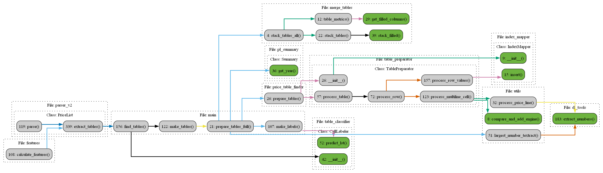

Creating Pandas Dataframes
At this stage, we possess representations of the crucial pages in the Textract format, which contains complex relationships between different page components, their coordinates, bounding boxes, and so on. We want to simplify this down to having a “simple” tables represented by Pandas dataframes. In this step we also take special care to handle “merged” cells that span several rows and/or columns.
The results of this part of the pipeline were already shown in the previous one. But a little repetition does not hurt.
Sample input
...
{
'BlockType': 'LINE',
'Confidence': 98.21517944335938,
'Text': 'PDEB5D21M67BZ1',
'Geometry': {
'BoundingBox': {
'Width': 0.05293244868516922,
'Height': 0.007043752353638411,
'Left': 0.3939276337623596,
'Top': 0.30503466725349426
},
'Polygon': [
{
'X': 0.3939276337623596,
'Y': 0.30503466725349426
},
{
'X': 0.44686007499694824,
'Y': 0.30503466725349426
},
{
'X': 0.44686007499694824,
'Y': 0.31207841634750366
},
{
'X': 0.3939276337623596,
'Y': 0.31207841634750366
}
]
},
'Id': '434b6051-ed59-46a5-b69f-a28e6d6d860a',
'Relationships': [
{
'Type': 'CHILD',
'Ids': [
'af1d52fd-0893-48e8-85a0-064eb1317e68'
]
}
],
'Page': 26
},
...
Sample output

Rules for cell merging
Code Flow
{kind=link}
Note
Refactoring note: This code looks too complex for what it does.